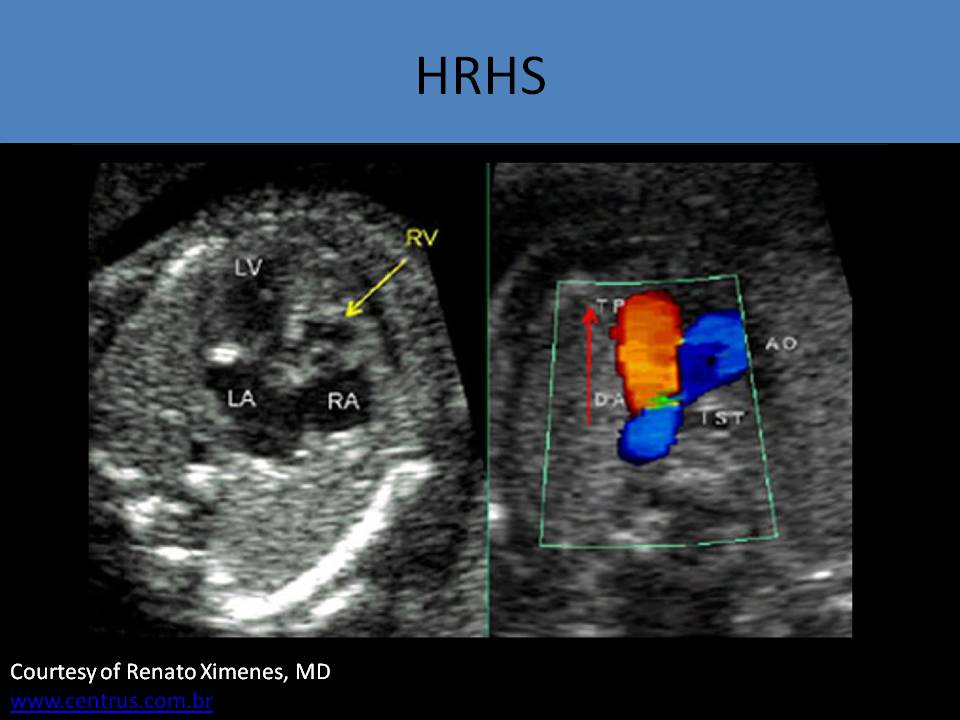
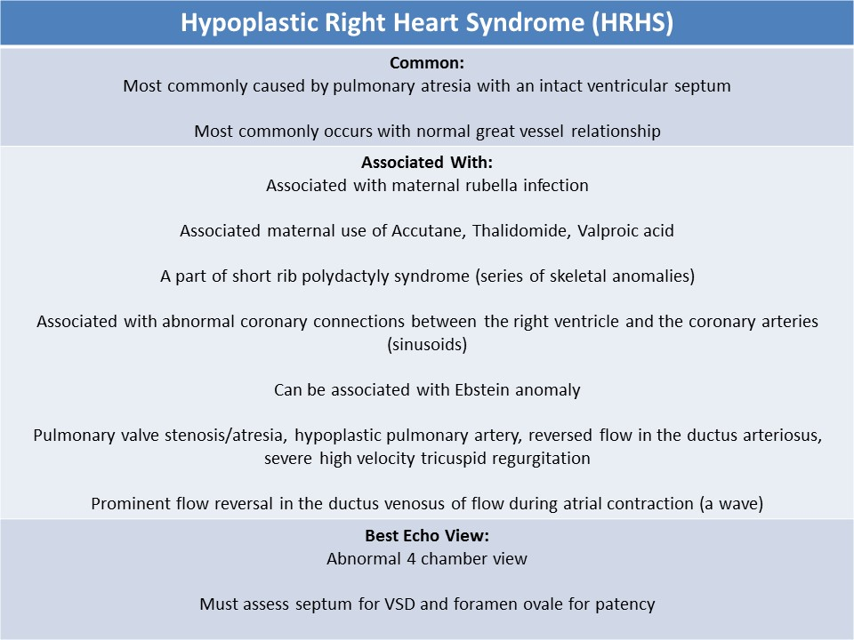
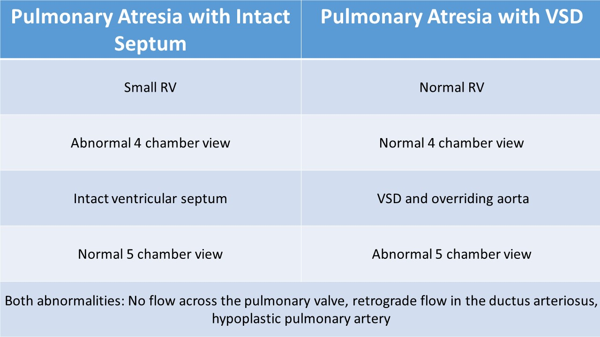
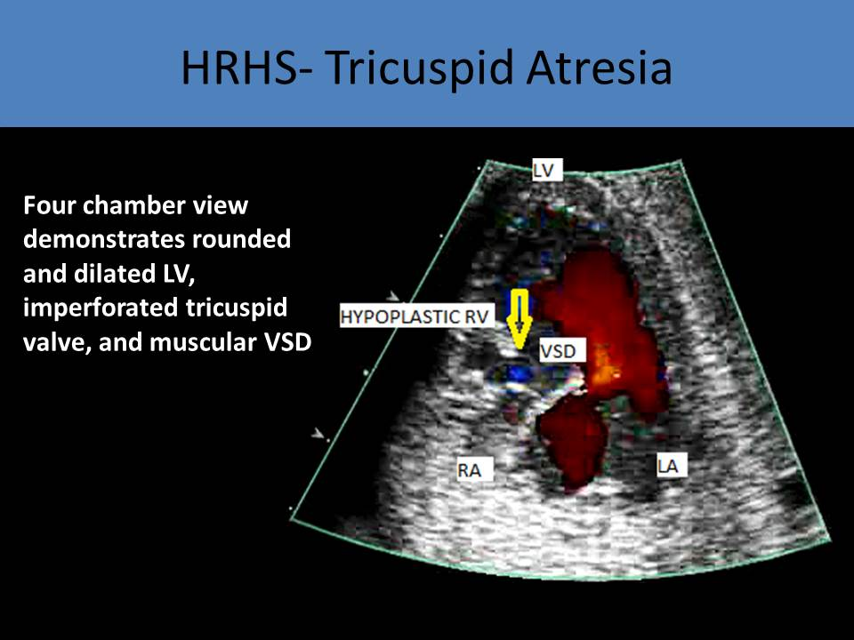
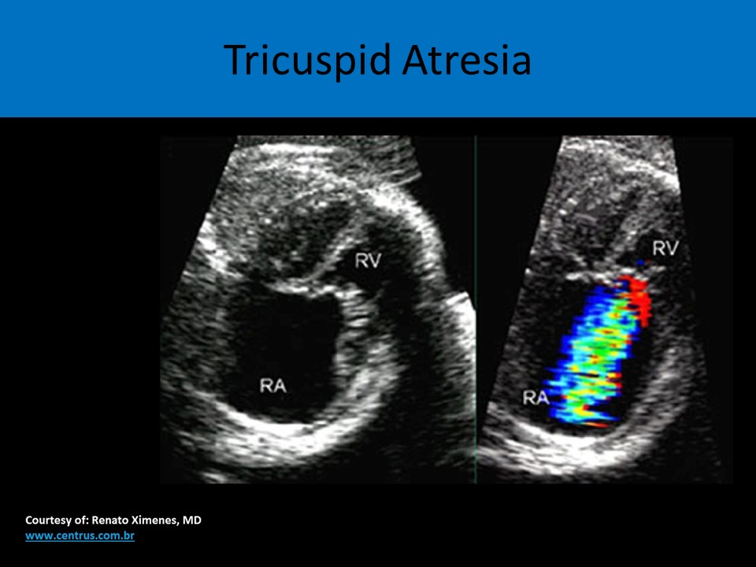
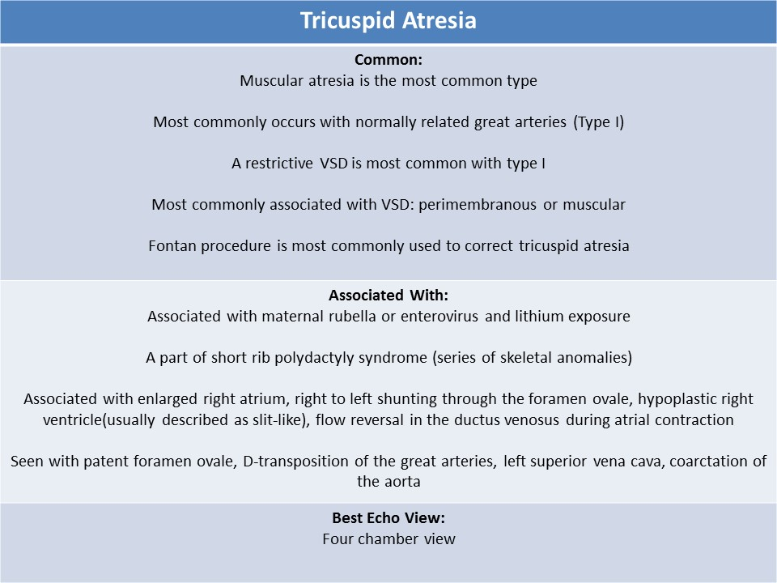

.jpg)
hypoplastic right heart syndrome
HRHS - Pulmonary Atresia with Intact Ventricular Septum:
- No pathway from the right ventricle to the pulmonary artery (complete obstruction)
- Small or hypoplastic, hypertrophied right ventricle (rarely right ventricle can be dilated)
- Rare type of congenital heart disease
- Most commonly caused by pulmonary atresia with an intact ventricular septum
- Level of pulmonary atresia is usually at the valve but the infundibulum can be absent (or atretic)
- Can be associated with Ebstein anomaly
- Can be associated with maternal rubella
- Rarely associated with chromosomal anomalies
- A part of short rib polydactyly syndrome (series of skeletal anomalies)
- There can be abnormal coronary connections between the right ventricle and the coronary arteries (sinusoids)
- Great vessel relationship usually normal
- Requires administration of Prostaglandin E at birth to maintain ductal patency until surgery can be performed
- Decreased flow leads to functional pulmonary atresia (no antegrade flow across the pulmonary valve)
- Reversed ductus arteriosus flow
- The morphology of the right ventricle can be abnormal- hypoplastic, hypertrophied
- Severe underdevelopment of inlet portion of the right ventricle
- RV has three segments (tripartite): Inlet-underneath the tricuspid valve, trabecular-muscular portion, outlet-includes the infundibulum
- Variations in abnormal muscular hypertrophy in any or all of the three segments will cause HRHS
- The infundibulum can be atretic (very small or absent)
- Main pulmonary and branch pulmonary arteries are usually hypoplastic
- Sinusoids
- Abnormal coronary artery connections to the right ventricle
- Increases pressure within the right ventricular cavity and can be associated with an accumulation of oxygen within the myocardium with the formation of sinusoids
- The smaller the right ventricle, the more sinusoids seen
- Coronary sinusoids lead to arrhythmia, myocardial infarction and fetal demise
- The floor of right atrium is formed by muscle tissue
- The tricuspid annulus reduced in size and is proportional to the right ventricle cavity
- Tricuspid valve is usually patent but has severe tricuspid regurgitation
- With a suprasystemic right ventricle, there can be the left ventricular outflow tract obstruction
- Atrial septal defect with right to left shunt and dilated left side
- Right ventricle and right atrium can be dilated in some cases ( associated with Ebstein anomaly) which leads to fetal hydrops and arrhythmia, and compromises the development of the lungs
- Four chamber view is the best view to identify possible HRHS
- After a small right heart is identified on the four chamber view, the pulmonary and tricuspid valves should be evaluated to determine the cause
- Small tricuspid annulus - tricuspid regurgitation at high velocity
- If flow is detected across the tricuspid valve, then pulmonary atresia with intact septum is suspected
- If TV flow is detected, there are significantly reduced E and A velocities with a small waveform
- If no flow is detected across the tricuspid valve, then tricuspid atresia is suspected
- Absent flow across the pulmonic valve indicates the pulmonary valve can be stenotic or atretic
- Pulmonary artery will be hypoplastic
- Reversed flow in the ductus arteriosus
- Hypoplastic, poorly contracting right ventricle
- Coronary sinusoids seen
- Prominent flow reversal in the ductus venosus of flow during atrial contraction (a wave)
- Subcostal four chamber view should be used to assess possible VSD and the foramen ovale
- The flow direction of ventricular septal defect: left to right shunt
- No flow enters the RV from the RA so there is no blood in the RV to flow through the VSD into the LV
- If a VSD is present, flow moves from the LV into the RV and to the pulmonary artery
- Left ventricle can be dilated with normal function
- Mitral and aortic valves are usually normal
- Normal orientation of the great vessels is most common
- After birth, a patent foramen ovale is required for survival
- If the foramen ovale is restricted, it will negatively affect prognosis after birth
 
Flow in the ductus is reversed as flow moves from the aorta into the ductus because no flow is moving out of the right ventricle
Pulmonary Atresia with a VSD:- 20% have chromosomal defects: most commonly associated with 22q11 deletion
- Atretic pulmonary valve causes flow reversal in the ductus arteriosus
- Lungs are supplied with oxygenated blood from the systemic circulation
- Fetal pulmonary circulation: Pulmonary veins to LA to LV to aorta to ductus arteriosus to pulmonary arteries to lungs
- Fetal systemic pathway: IVC to RA to foramen ovale to LA to LV to aorta to peripheral tissues
- Blood that enters RV: IVC to RA to RV to VSD to LV to aorta to peripheral tissues
- Secundum ASD or PFO commonly identified after birth
- About 50% of cases have NO ductus arteriosus
- May have major aortopulmonary collateral arteries (MAPCA) to supply pulmonary circulation
- Thickened, atretic pulmonary valve
- Hypoplastic or absent main pulmonary artery
- VSD
- Normal 4 chamber view with normal RV/LV symmetry
- Abnormal 5 chamber view with overriding aorta and malalignment VSD
- Reversal of flow in ductus arteriosus demonstrated in three vessel view

Tricuspid Atresia:- 1 to 3% of congenital heart defects
- Associated with maternal rubella or enterovirus and lithium exposure
- A part of short rib polydactyly syndrome (series of skeletal anomalies)
- Lack of communication between the right atrium and the right ventricle with hypoplastic right ventricle
- Imperforate membrane and echogenic leaflets without mobility
- Complete absence of the right atrioventricular junction
- A VSD is always present with tricuspid atresia, usually the perimembranous or muscular type
- Other associated defects include a large ASD or PFO, transposition of the great arteries and some form of right ventricular outflow obstruction
- Requires administration of Prostaglandin E at birth to maintain ductal patency until surgery can be performed
- Fontan procedure is most commonly used to correct tricuspid atresia
Types of Tricuspid Atresia:
1. Morphological Differences:
- Muscular atresia: no tricuspid valve, most common type
- Membranous atresia: the membranous atrioventricular septum lines the floor of the right atrium
- Valvar: valve tissue exists without opening
2. Relationship of the great arteries:
TYPE I:
- Tricuspid atresia with normally related great arteries
- Most common type
- A restrictive VSD is most common with type I
- The size of the VSD controls the amount of antegrade pulmonary flow
- With intact ventricular septum and pulmonary stenosis
- With small VSD and pulmonary stenosis
- With large VSD and pulmonary stenosis
TYPE II:
- Tricuspid atresia with transposed great arteries
- The size of VSD controls any obstruction to systemic flow
- With VSD and pulmonary atresia
- With VSD and pulmonary stenosis
- With VSD and no pulmonary obstruction
TYPE III:
- L-transposition of the great arteries
- Patent foramen ovale
- D-transposition of the great arteries
- Left superior vena cava
- Coarctation of the aorta
- Hypoplastic right ventricle
- Severity of the right ventricle hypoplasia depends on the VSD - the smaller VSD, the smaller the RV
- RV includes only the trabecular region and the infundibular region
- Normal RV includes the infundibular, the trabecular, and inlet region
- Tricuspid valve is atretic; TV size is normally proportional to the size of the right ventricle
- Dilated right atrium, associated with the severity of tricuspid regurgitation
- Dilated, rounded and hypertrophied left ventricle
- Foramen ovale plays important role in circulation - right to left shunt (cardiac output travels through the foramen ovale)
- Best view to evaluate is the four chamber view
- No flow through the tricuspid valve
- No tricuspid leaflets identified
- Hypoplastic right ventricle, usually described as slit-like
- Degree of right ventricular hypertrophy is dependent on type of atresia and the size of the VSD
- If a VSD is present, flow moves from the LV into the RV and to the pulmonary artery
- Right to left shunting through the foramen ovale
- Reversed ductus arteriosus with associated pulmonary obstruction ( pulmonary atresia)
 

Four chamber view with tricuspid valve atresia with muscular VSD
Muscular tricuspid atresia
Tricuspid atresia with muscular VSD ( left to right shunting)
Reversed ductus arteriosus (left to right shunting) in tricuspid atresia